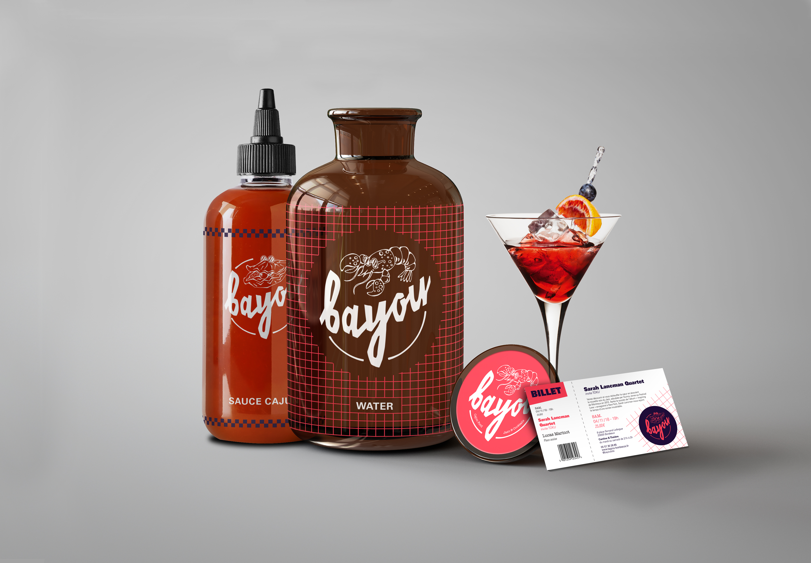
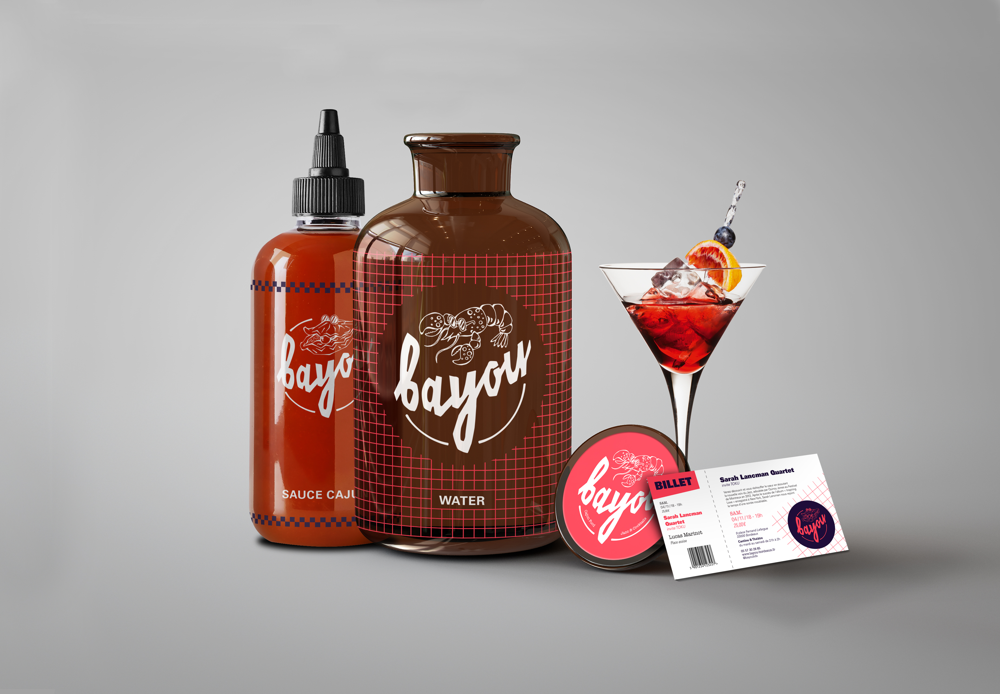

Work Single


 

Le Bayou
Logo, Brading, IllustrationParce que tout projet a une histoire. L’idée du chef Stan émerge au cours d’un voyage en Louisiane. Ce passionné de cuisine redécouvre alors la culture gastronomique de cette région. C’est cette authenticité, ces saveurs, qu’il lui inspire Bayou, ce nouveau restaurant. À la carte, des spécialités créoles, africaines, canadiennes et bien d’autres, le tout, dans une ambiance jazz. Le principe est simple, stimuler les papilles de ses hôtes à travers une cuisine multiculturelle dans une ambiance lounge, propice à l’émerveillement. Manger, boire et danser, telle est la devise de cet établissement. Cette cuisine conviviale propose un cadre intimiste où la salle de dîner offre seulement 10 tables; cependant le service « à emporter » est également disponible. Les visiteurs se verront entraîner dans une ambiance tamisée mêlée à une musique entraînante. Le chef propose une carte trimestrielle. Alligator, huîtres frites, barbues et écrevisses sont ses spécialités. Le restaurant du Bayou reste le lieu où le barbecue est une culture et les épices une religion. L’identité de ce projet est fortement inspirée du graphisme des fastfoods des 80’s. Cet esprit vintage est combiné à des illustrations qui représentent les spécialités de la maison. Elles participent à renforcer la symbolique «américaine», à la façon des logos des franchises de NFL. La volonté était de véhiculer une idée de gourmandise, une ambiance dynamique et un mélange de modernisme et de rétro. Le logo est basé sur une typographie créée par les83machines, son aspect répond parfaitement au désir d’être authentique, rustique et original. Elle transmet cette effet "Louisiane" essentiel. Pour l’accompagner, l’American TypeWriter de Joel Kaden et Tony Stan pour l’International Typeface Corporation, sert pour des informations minimes. Elle fait référence aux premiers pas des États-Unis dans l'industrialisation, elle est également très esthétique; notamment pour les chiffres et les capitales. Enfin le reste des typographies est géré avec la police Univers de Adrian Frutiger. Son large choix de graisses permet un éventail d’utilisations tout aussi large, titre, corps de texte en passant par les crédits. Elle se veut discrète mais pratique. Les couleurs ne sont pas non plus là par hasard, elles contribuent elles aussi à renforcer cette «américanisation» de l’identité. Bleu nuit, magenta, comme un clin d’oeil au cliché du drapeau des U.S.A.. Combinées aux grilles, aux damiers et aux formes géométriques, le projet prend toute sa valeur. C'est finalement tous ces petits détails qui donnent une richesse graphique justifiée au branding du Bayou.